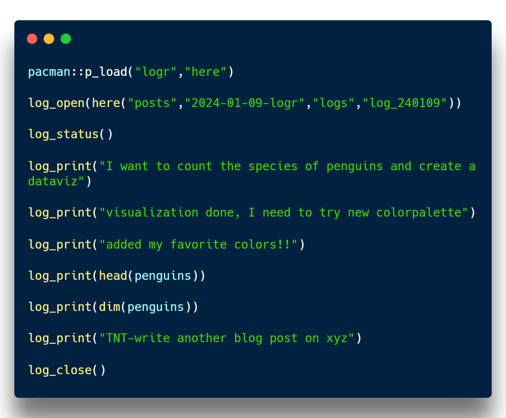

```{r}
#| message: false
#| warning: false
pacman::p_load("logr","here","palmerpenguins","tidyverse")
```This post offers a disciplined approach to maintaining research logs and a proactive mindset for efficient and standardized data analysis sessions.

When I was asked for a detailed analysis conducted last month, I faced two challenges. The steps were really detailed, making a lot of decisions necessary, and remembering the exact process a month later was tough. So, I turned to my log files.
I keep detailed logs of every step in my analysis. While my main results file has the big decisions, the log files are like prompts, capturing every little thing with timestamps. Even though I could remember the main process, the detailed parts were much clearer in my log files than in my memory.
Maintaining these logs turned out to be a smart move. Writing things down as I go makes it much easier than trying to recall everything later. This idea aligns with Long’s law of documentation:
“It’s always faster to document it today than tomorrow.”
I learned this from J. Scott Long’s Stata book, a great resource, especially for those learning to code. Following this principle, I only wrap up an analysis session when I’m confident that the key details are safely stored in my log files.
This is a typical analysis session simplified.
Packages
Counting the species
```{r}
#| message: false
#| warning: false
penguins |>
count(species)
```# A tibble: 3 × 2
species n
<fct> <int>
1 Adelie 152
2 Chinstrap 68
3 Gentoo 124Dataviz
```{r}
#| message: false
#| warning: false
penguins |>
ggplot(aes(species,bill_length_mm,fill=species))+
geom_boxplot()
```With different colors
```{r}
#| message: false
#| warning: false
penguins |>
ggplot(aes(species,bill_length_mm,fill=species))+
geom_boxplot()+
scale_fill_manual(values = c(
"midnightblue", "orange", "seagreen"
))+
theme_minimal()
```
As I tackle this, I open an R script file and immediately begin jotting down my logs. Check out the script of my log file capturing the entire analysis session below.

Engaging in this process, I initiate an R script file and promptly commence logging each step. Witness the script of my log file documenting the entire analysis session below. Running this script in parallel with my analysis generates and populates a log output file. I’ve included screenshots of it for your reference below.
How I learnt to do it better
- Reproducible Logging Script:
I’ve established a fundamental script that serves as my go-to template. Every time I embark on an R project for analysis, I simply copy and integrate this foundational script into my log file. This practice ensures a consistent and reproducible structure for my logs, streamlining the documentation process and maintaining clarity throughout various analyses.
- TNT - The Next Thing Approach:
Drawing inspiration from the Getting Things Done (GTD) concept, I conclude each of my log files with a TNT section—The Next Thing. This forward-looking approach acts as a reminder for my next steps in the analysis. When I resume my work, I seamlessly pick up where I left off, enhancing efficiency and maintaining a smooth workflow. By incorporating these two practices, I not only establish a standardized logging procedure but also adopt a proactive mindset for subsequent analytical sessions.
Takeaway
The concept of research logs, as elucidated by Scott Long in his book on the workflow of data analysis using Stata, made a lasting impression on my approach to work. Long emphasizes the pivotal role of logging in keeping the work on track, defining log files as a comprehensive “record of what you have done, why you did it, and how you did that.” In aligning with this philosophy, the “logr” package has proven instrumental in seamlessly implementing and maintaining this disciplined logging process. It has not only enabled me to adhere to Long’s principles but has significantly enhanced the efficiency and reproducibility of my data analysis endeavors.